Ο Κάλαμος και ο Κώδικας
και το Ζωντανό Ιερό
Πραγματεία του Mandos16: ένας κούφιος κάλαμος, ένα περιδέραιο από οστά, μια λανθασμένη μετάφραση της θάλασσας και το ελληνικό αλφάβητο, διαβασμένα ως η ανθρώπινη σπονδυλική στήλη.
Σε κάθε κεφάλαιο η πραγματεία μένει ακέραιη με χρυσό χρώμα. Δίπλα της, με κυανό, βρίσκεται ένας έλεγχος με βάση τα αρχαία κείμενα, την ανατομία και τη γλωσσολογία, μαζί με την αριθμητική. Όπου διαφέρουν, φαίνεται ακριβώς πώς.
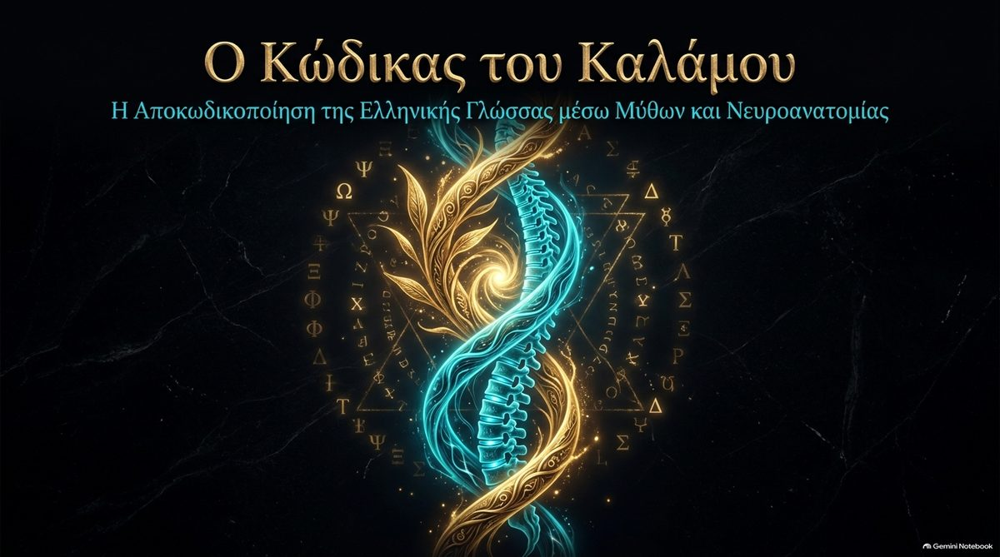
Ο κώδικας του καλάμου στη σπονδυλική στήλη
Ηχογραφημένη ομιλία στα Ελληνικά. Φορτώνει μόνο όταν πατήσετε αναπαραγωγή.
The Greek Alphabet Maps the Human Spine
Ηχογραφημένη ομιλία στα Αγγλικά. Φορτώνει μόνο όταν πατήσετε αναπαραγωγή.
Κάλαμος και Καρπός
Ο Κάλαμος και ο Καρπός ήταν νεαροί εραστές. Ο Καρπός πνίγηκε στον ποταμό Μαίανδρο σε έναν αγώνα κολύμβησης. Ο Κάλαμος, συντετριμμένος από τη θλίψη, μεταμορφώθηκε σε κούφιο ποτάμιο καλάμι που θροΐζει όταν περνά ο άνεμος.
Η αποκωδικοποίηση του σώματος. Ο Κάλαμος είναι το κούφιο στέλεχος της σπονδυλικής στήλης και ο κεντρικός της σωλήνας. Το καλάμι λυγίζει στον άνεμο και βουίζει όταν περνά αέρας μέσα του. Η σπονδυλική στήλη λειτουργεί ως κούφιος αγωγός για τις υγρές ταλαντώσεις της αναπνοής και του καρδιακού παλμού.
Ο θρόος του καλαμιού ακουγόταν ως θρήνος. Ο μύθος δένει ένα φυσικό καλάμι με τη φωνή, την αναπνοή, το υγρό και τον αντίλαλο.
Η πηγή. Την ιστορία αφηγείται ο Νόννος στα Διονυσιακά (βιβλίο 11, 5ος αιώνας μ.Χ.). Ο Κάλαμος είναι γιος του ποταμόθεου Μαιάνδρου· στην αφήγηση ο Καρπός γίνεται ο καρπός και ο Κάλαμος το καλάμι.
Η λέξη. Το «κάλαμος» προέρχεται από ινδοευρωπαϊκή ρίζα που σημαίνει «καλάμι, άχυρο», από την οποία προέρχονται και το λατινικό culmus και το παλαιοαγγλικό healm. Το αραβικό qalam, «πένα», είναι διαφορετική περίπτωση: δανείστηκε από τα ελληνικά, άρα είναι συγγενής μέσω δανεισμού και όχι κλάδος της ίδιας ρίζας.
Η ανατομία. Ο σπονδυλικός σωλήνας είναι κούφιος και περιέχει τον νωτιαίο μυελό, που περιβάλλεται από εγκεφαλονωτιαίο υγρό (ΕΝΥ). Το υγρό αυτό πάλλεται με κάθε καρδιακό παλμό και κάθε αναπνοή. Ο ίδιος ο αέρας δεν ταξιδεύει μέσα στον σωλήνα.
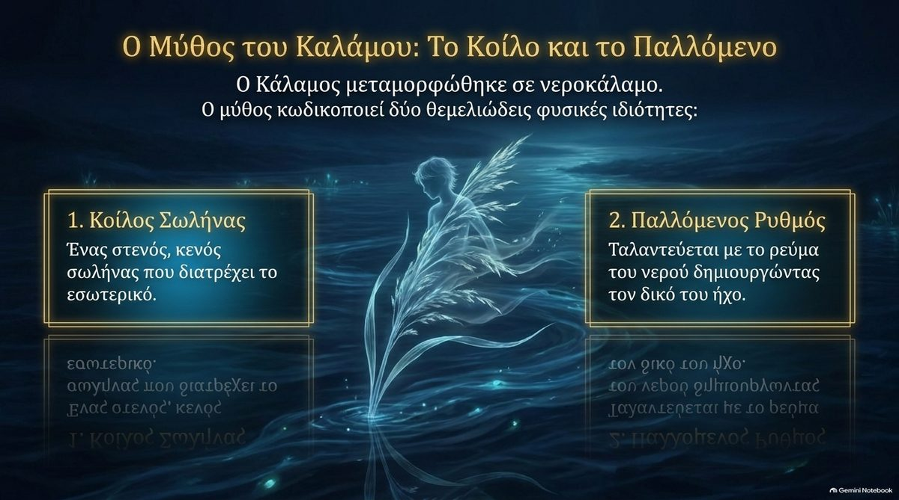
Το Καλάμι Φτιάχνει τον Δικό του Άνεμο
Ένα καλάμι του κήπου κινείται μόνο όταν το κινεί ο άνεμος. Στην πραγματεία το ανθρώπινο καλάμι γεννά τον δικό του άνεμο, και το υγρό μέσα του κινείται σε κύμα.
Ο κόμβος. Στην κορυφή του στελέχους, στον προμήκη μυελό, ο κεντρικός σωλήνας ανοίγει στην τέταρτη κοιλία. Στην πλάγια κοιλιακή περιοχή του προμήκη βρίσκεται το σύμπλεγμα προ-Bötzinger, ο βηματοδότης της αναπνοής. Ο «άνεμος» γεννιέται εδώ.
Το κύμα. Το ΕΝΥ δεν μένει ακίνητο. Με κάθε καρδιακό παλμό πιέζεται προς τα κάτω και αναπηδά καθώς πέφτει η πίεση, ενώ η αναπνοή το διαμορφώνει. Το αποτέλεσμα είναι στάσιμο κύμα σε κούφιο σωλήνα.
Ο νευρικός σωλήνας, ένα απολίθωμα. Τις εβδομάδες 3 με 4 της κύησης η νευρική πλάκα διπλώνει και κλείνει σε κούφιο σωλήνα. Ο κεντρικός σωλήνας είναι η μικρογραφία του.
Συμφωνεί. Το σύμπλεγμα προ-Bötzinger είναι πραγματική γεννήτρια αναπνευστικού ρυθμού. Το ΕΝΥ πάλλεται με τον καρδιακό παλμό και ρέει προς τα κάτω στον αυχένα καθώς ο εγκέφαλος διογκώνεται στη συστολή. Ο νευρικός σωλήνας κλείνει τις εβδομάδες 3 με 4 και ο κεντρικός σωλήνας είναι το κατάλοιπό του.
Διαφέρει. (1) Η αναπνοή ηρεμίας, 12 με 20 αναπνοές το λεπτό, είναι 0,2 έως 0,33 Hz και όχι 0,1 έως 0,2 Hz όπως γράφει η παρουσίαση. (2) Απ' όσο γνωρίζω, μελέτες μαγνητικής τομογραφίας σε πραγματικό χρόνο δείχνουν ότι η εισπνοή κινεί το ΕΝΥ προς το κεφάλι, αντίθετα από τα αρχεία, που λένε προς τα κάτω. Ελέγξτε το. (3) Ο κεντρικός σωλήνας είναι σε μεγάλο βαθμό κλειστός σε πολλούς ενήλικες, οπότε το παλλόμενο κύμα ταξιδεύει στον περιβάλλοντα υποαραχνοειδή χώρο· το ένα αρχείο σας το λέει σωστά και το άλλο όχι. (4) Η μέγιστη ταχύτητα 78 mm/s αναφέρεται στα αρχεία σας· δεν μπόρεσα να την επαληθεύσω, και οι ταχύτητες διαφέρουν ανά άτομο και επίπεδο.
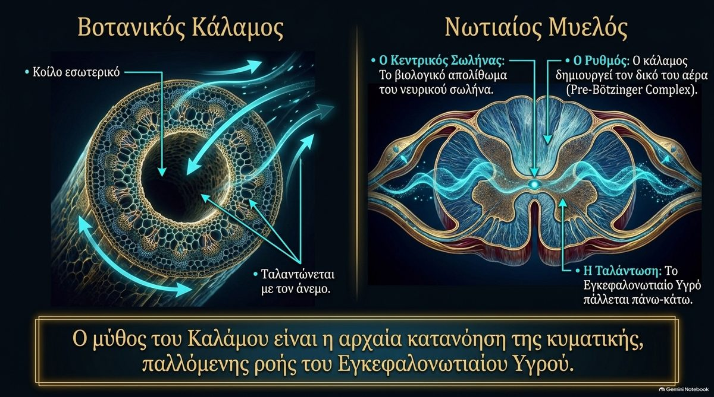
Calamus Scriptorius, ο Καλαμος της Γραφής
Στη βάση του εγκεφάλου, εκεί όπου η τέταρτη κοιλία στενεύει σε κεντρικό σωλήνα του νωτιαίου μυελού, οι ανατόμοι χρησιμοποιούν από παλιά ένα όνομα που σημαίνει «καλάμι γραφής». Το σημείο λέγεται obex, «φραγμός», ή calamus scriptorius.
Το καλάμι έχει ήδη όνομα. Το δάπεδο της τέταρτης κοιλίας στενεύει προς το obex σαν τη σχισμένη μύτη μιας αρχαίας καλαμένιας πένας. Η είσοδος στο καλάμι λέγεται καλάμι.
Η πύλη του υγρού. Εδώ το εγκεφαλονωτιαίο υγρό περνά από τις κοιλίες της κεφαλής στον κούφιο σωλήνα του μυελού. Είναι το φυσικό καλάμι μέσα από το οποίο μπαίνει το υγρό κύμα στη σπονδυλική στήλη.
Το σημείο διασταύρωσης. Νευρικές ίνες αισθητικότητας διασταυρώνονται από αριστερά προς τα δεξιά στον κάτω προμήκη σε αυτό το επίπεδο: ένας κόμπος στο ύφασμα, ακριβώς στο καλάμι.
Το καλάμι δεν είναι μόνο σύμβολο. Βρίσκεται στη βάση του εγκεφάλου σε κάθε εγχειρίδιο ανατομίας από πάντα.
Συμφωνεί. Το obex είναι λατινικά «φραγμός», και το calamus scriptorius, «καλάμι γραφής», είναι η παραδοσιακή ονομασία για το κάτω άκρο του δαπέδου της τέταρτης κοιλίας στο obex, που έχει σχήμα μύτης πένας. Ο κεντρικός σωλήνας αρχίζει εδώ, και υγρό από την τέταρτη κοιλία μπορεί να περάσει μέσα του. Στους περισσότερους ανθρώπους το obex βρίσκεται περίπου 10 με 12 mm πάνω από το ινιακό τρήμα· με χαμηλή θέση της παρεγκεφαλιδικής αμυγδαλής μπορεί να βρίσκεται στο ίδιο επίπεδο ή χαμηλότερα. Οι αισθητικές ίνες διασταυρώνονται στον κάτω προμήκη κοντά σε αυτό το επίπεδο. Το λατινικό calamus δανείστηκε από το ελληνικό κάλαμος, άρα η φράση των ανατόμων είναι η ελληνική λέξη με λατινικό ένδυμα.
Προσοχή. Το calamus scriptorius είναι παραδοσιακό όνομα· οι σύγχρονοι ανατομικοί κατάλογοι τείνουν να χρησιμοποιούν το συντομότερο «obex» (δεν μπόρεσα να το ελέγξω από εδώ). Το όνομα προέρχεται από το σχήμα, άρα δείχνει ότι το ανατομικό λεξιλόγιο χρησιμοποιεί ήδη το καλάμι και όχι ότι ο μύθος είναι αληθινός. Το «κύμα του υγρού» είναι θεωρία του Gardner: οι χειρουργοί που θεραπεύουν τη συριγγομυελία φράζουν μερικές φορές το obex για να μη φτάνουν οι παλμοί του υγρού στον σωλήνα, και η Wikipedia σημειώνει ότι η δήλωση αυτή χρειάζεται παραπομπή. Σε πολλούς ενήλικες ο σωλήνας είναι κλειστός κάτω από το obex, άρα το πόσο υγρό περνά συζητείται.
Από τον Κάδμο στον Κάλαμο
Οι δύο λέξεις έχουν τον ίδιο σκελετό και διαφέρουν σε ένα σημείο. Το ΚΑΔΜΟΣ έχει ως τρίτο γράμμα ένα κλειστό τρίγωνο, το Δ. Το ΚΑΛΑΜΟΣ ανοίγει αυτό το τρίγωνο σε δύο γράμματα, το Λ και το Α.
Φωνητική υγροποίηση. Το Δέλτα είναι κλειστό δοχείο: στατική, αρχιτεκτονική δύναμη. Ανοιγμένο στην κορυφή του Λάμδα και στην πρωταρχική δύναμη του Άλφα, γίνεται το ρευστό, λικνιζόμενο καλάμι. Ο Κάδμος, το συμπαγές πλαίσιο του αλφαβήτου, υγροποιείται σε Κάλαμο.
Η διαφορά. 362 − 335 = 27. Το Δ είναι 4 και το Λ + Α είναι 31, άρα η αλλαγή προσθέτει 27, τον αριθμό των γραμμάτων του αρχαϊκού ελληνικού αλφαβήτου, που ρέει ως κύμα μέσα από τα 31 νωτιαία τμήματα.
Η αριθμητική βγαίνει. ΚΑΔΜΟΣ = 335, ΚΑΛΑΜΟΣ = 362, διαφορά 27, και Λ + Α − Δ = 31 − 4 = 27. Τα 31 νωτιαία τμήματα υπάρχουν πραγματικά, ένα για καθένα από τα 31 ζεύγη νωτιαίων νεύρων.
Αξίζει δοκιμή. Το κλασικό αλφάβητο έχει 24 γράμματα· το 27 μετρά και τα τρία αρχαϊκά αριθμητικά γράμματα. Μία ταιριαστή διαφορά δεν ξεχωρίζει τον σχεδιασμό από την τύχη, οπότε ένας δίκαιος έλεγχος είναι να μετρηθεί πόσα άλλα ζεύγη λέξεων του ελληνικού λεξιλογίου διαφέρουν κατά 27.
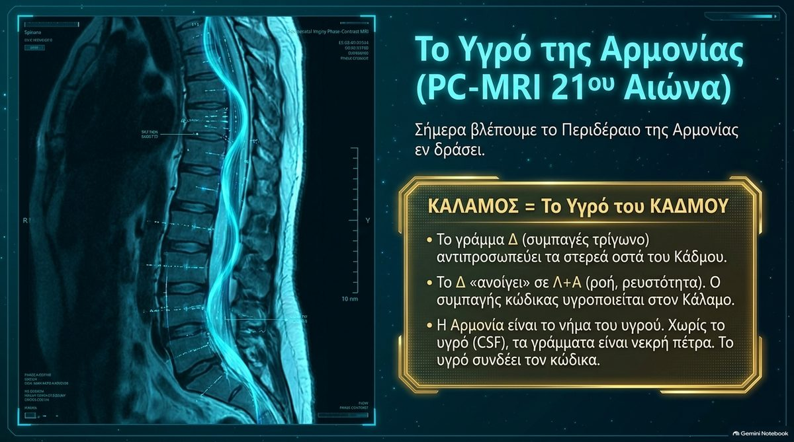
Αποκάλυψη 11:1, καλάμι όμοιο με ράβδο
Στην Αποκάλυψη 11:1 δίνεται στον Ιωάννη ένα καλάμι μέτρησης: κάλαμος ὅμοιος ῥάβδῳ, «καλάμι όμοιο με ράβδο». Η πραγματεία μετρά τη φράση ως 1729 και λέει ότι, με τον κανόνα του colel, ισούται με σῶμα τοῦ Ἰησοῦ, «το σώμα του Ιησού». Το καλάμι μέτρησης είναι τότε το ανθρώπινο σώμα που λειτουργεί ως γραμμή βάσης.
Το πρώτο μισό ισχύει. κάλαμος 362 + ὅμοιος 460 + ῥάβδῳ 907 = 1729. Το άθροισμα είναι σωστό. Τα μέρη που αναφέρονται στα αρχεία, 390 και 977, δεν είναι οι τιμές των λέξεων, αν και τυχαίνει να δίνουν το ίδιο άθροισμα, 1367.
Το δεύτερο μισό ισχύει επίσης, χωρίς το άρθρο. σῶμα 1041 + Ἰησοῦ 688 = 1729, με απλή μιλησιακή ισοψηφία και χωρίς ειδικό κανόνα. Αν προστεθεί το άρθρο, τὸ σῶμα τοῦ Ἰησοῦ όπως το γράφει συνήθως η Καινή Διαθήκη, το άθροισμα αλλάζει (το σῶμα τοῦ Ἰησοῦ είναι 2499). Άρα η ισότητα είναι ακριβής για την γυμνή φράση σῶμα Ἰησοῦ. Η πραγματεία πρέπει να δηλώνει αυτή τη μορφή, γιατί ένας αναγνώστης που δοκιμάζει τη συνήθη διατύπωση δεν θα βρει 1729.
Ο Κάδμος, η Αρμονία και το Περιδέραιο
Ο Κάδμος, ιδρυτής της Θήβας, σκότωσε τον δράκο του Άρη και έσπειρε τα δόντια του, και από τη γη ξεπήδησαν ένοπλοι άνδρες, οι Σπαρτοί. Παντρεύτηκε την Αρμονία, κόρη του Άρη και της Αφροδίτης. Στον γάμο ο Ήφαιστος της χάρισε ένα λαμπερό περιδέραιο που κουβάλησε μια κατάρα στις γενιές, ώσπου ο Κάδμος και η Αρμονία μεταμορφώθηκαν σε φίδια.
Ο Κάδμος είναι η άκαμπτη δομή: το οστό και η συμπαγής σπονδυλική στήλη. Φέρνει τα διακριτά γράμματα, τα δομικά στοιχεία που χύνονται μέσα στο ζωντανό καλάμι.
Η Αρμονία («το συναρμολόγημα») είναι η δομική ισορροπία: οι φυσικές καμπύλες και η ισορροπία που κρατούν το σώμα ενωμένο.
Το περιδέραιο είναι ο κεντρικός σωλήνας που διατρέχει τους ευθυγραμμισμένους σπονδύλους. Η κατάρα είναι το αργό κλείσιμό του: με την ηλικία ο σωλήνας γεμίζει με κυτταρικά υπολείμματα και σφραγίζεται.
Τα φίδια είναι η τελευταία μορφή του καλαμιού: καθώς ο μυελός τελειώνει, στενεύει σε κώνο και σε ξερή ινώδη κλωστή, αγκυροβολημένη στην απολιθωμένη κόκκυγα.
Η παλαιότερη παράδοση. Σε παλαιότερη παράδοση ο Κάδμος ήταν φύλακας του Πρώτου Ναού της Γνώσης στην αρχαία Αρμενία, τη χώρα του θεού της γραφής Τιρ, και μετέφερε μια ιερή γραφή προς τα δυτικά.
Ο μύθος. Η Αρμονία είναι κόρη του Άρη και της Αφροδίτης και το περιδέραιο το φτιάχνει ο Ήφαιστος· σε ορισμένες εκδοχές το καταριέται από οργή προς την Αφροδίτη. Η κατάρα του πέφτει στον βασιλικό οίκο της Θήβας. Ο Οβίδιος αφηγείται πώς ο Κάδμος και η Αρμονία έγιναν φίδια στην Ιλλυρία. Πέντε Σπαρτοί επιζούν από τη μάχη των σπαρμένων ανδρών.
Τα γράμματα. Ο Ηρόδοτος λέει ότι ο Κάδμος έφερε δεκαέξι γράμματα, τα Καδμεία γράμματα. Στις ελληνικές πηγές ο Κάδμος έρχεται από τη Φοινίκη, από την Τύρο ή τη Σιδώνα. Ο αρμενικός ναός και η σύνδεση με τον Τιρ δεν υπάρχουν στις κλασικές πηγές· ανήκουν στον Κώδικα.
Η ανατομία. Το νωτιαίο κωνίο τελειώνει περίπου στο L1 με L2 και το τελικό νημάτιο είναι μια ινώδης κλωστή που αγκυροβολεί στην κόκκυγα, η οποία είναι συνήθως τέσσερις συνενωμένοι σπόνδυλοι, από τρεις έως πέντε. Ο κεντρικός σωλήνας στενεύει, και συχνά κλείνει, στους ενήλικες.
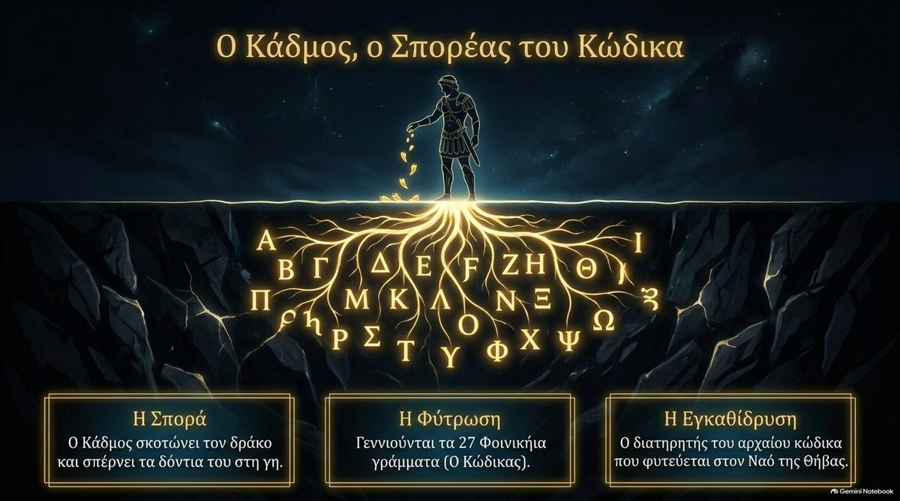
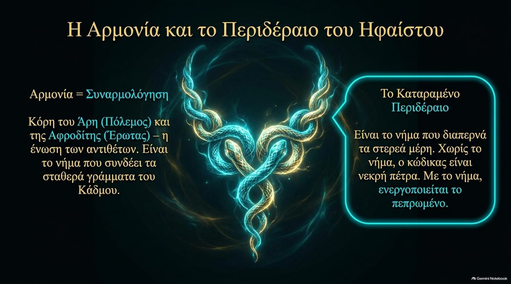
Yam Suph και η Ερυθρά Θάλασσα
Η εβραϊκή φράση Yam Suph (ים סוף) είναι η θάλασσα που διασχίζουν οι Ισραηλίτες στην Έξοδο. Οι Έλληνες μεταφραστές στην Αλεξάνδρεια την απέδωσαν Ἐρυθρὰ Θάλασσα, «Ερυθρά Θάλασσα», και οι μεταγενέστερες μεταφράσεις ακολούθησαν.
Η ανάγνωση. Αυτή είναι μια επικάλυψη μετάφρασης 2.300 ετών. Το suph είναι αιγυπτιακός δανεισμός για τους πάπυρους και τα φυτά του έλους, οπότε το κείμενο περιγράφει τη διάβαση μιας βαλτώδους Θάλασσας των Καλάμων. Παραλληλίζεται με το πώς τα Φοινικήια γράμματα μετονομάστηκαν «φοινικικά γράμματα».
Ο Μωυσής ως αυτός που τραβά έξω. Το Μωσέ προέρχεται από τη ρίζα m-sh-h, «τραβώ έξω». Τραβιέται ως μωρό από τα καλάμια του Νείλου, και τραβά τον λαό του μέσα από τη Θάλασσα των Καλάμων. Εσωτερικά, είναι η πρόθεση που τραβά την προσοχή και το υγρό προς τα πάνω στο κούφιο καλάμι.
Ο σύνδεσμος με το σώμα. Η Θάλασσα των Καλάμων είναι το εσωτερικό καλάμι, η σπονδυλική στήλη, και το υγρό κύμα στη βαθιά ακινησία.
Συμφωνεί. Η Μετάφραση των Εβδομήκοντα, που έγινε στην Αλεξάνδρεια τον 3ο αιώνα π.Χ., λέει πράγματι Ἐρυθρὰ Θάλασσα, και οι λατινικές και αγγλικές Βίβλοι την κράτησαν. Το εβραϊκό suph σημαίνει καλάμια ή βούρλα: στην Έξοδο 2 το μωρό τοποθετείται ανάμεσα στα suph στην όχθη του ποταμού. Η Έξοδος 2:10 εξηγεί η ίδια το όνομα Μωυσής ως «τραβηγμένος έξω». Έχει προταθεί αιγυπτιακή προέλευση του suph, από το twf, «πάπυρος», και ο αιγυπτιολόγος James Hoffmeier υποστηρίζει ανάγνωση με έλος καλαμιών στο Israel in Egypt.
Διαφέρει. Το Yam Suph ονομάζει και πραγματική αλμυρή θάλασσα: το Α' Βασιλέων 9:26 τοποθετεί την Εσιών-γκεβέρ στην ακτή του, στον κόλπο της Άκαμπα. Οι μεταφραστές ίσως ονόμαζαν μια πραγματική θάλασσα και όχι απλώς διάβασαν λάθος μια λέξη, και ποιο νερό ήταν η διάβαση συζητείται ακόμη. Πολλοί μελετητές επισημαίνουν επίσης ότι το όνομα Μωυσής μοιάζει με την αιγυπτιακή λέξη mose, «γεννημένος από», όπως στον Θούθμωση.
| Εποχή | Γλώσσα | Όρος | Σημασία |
|---|---|---|---|
| Αρχικό κείμενο | Εβραϊκά | ים סוף | «Θάλασσα των Καλάμων» |
| 3ος αιώνας π.Χ. | Ελληνικά (Εβδομήκοντα) | Ἐρυθρὰ Θάλασσα | «Ερυθρά Θάλασσα» |
| 4ος με 5ος αιώνας μ.Χ. | Λατινικά (Vulgata) | Mare Rubrum | «Ερυθρά Θάλασσα» |
| 1611 | Αγγλικά (King James) | Red Sea | παγιώθηκε στα αγγλικά |
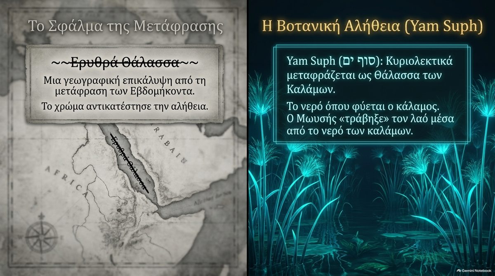
Ο Προμήκης Κόμβος και η Γη του Γάλακτος και του Μελιού
Η πραγματεία ακολουθεί την Έξοδο προς τα πάνω στο καλάμι, ως την κορυφή του, στο σημείο του αυχένα που λέγεται GV-16, Fengfu, «Ανεμόσπιτο».
Το κατώφλι. Ο προμήκης μυελός, εκεί όπου το νωτιαίο καλάμι διευρύνεται σε εγκεφαλικό στέλεχος, βρίσκεται πίσω από το σημείο βελονισμού GV-16 στη μεγάλη δεξαμενή (cisterna magna). Όταν η αναπνοή επιβραδύνεται στον διαλογισμό, ο καρδιακός παλμός και η αναπνοή συζεύγνυνται σε ένα μεγάλο κύμα εκεί, και η τέταρτη κοιλία ανοίγει.
Το γάλα. Το λευκό, θρεπτικό εγκεφαλονωτιαίο υγρό.
Το μέλι. Στη βαθιά ακινησία, με τις αισθήσεις αποσυρμένες, η επίφυση εκκρίνει τις χρυσές εκκρίσεις της στις κοιλίες: μελατονίνη, πινολίνη και παράγωγα DMT. Αυτό πλημμυρίζει τη μεγάλη δεξαμενή και κατεβαίνει τα 31 νωτιαία τμήματα, ένας εσωτερικός ωκεανός.
Το τόξο. Namu, η ασύστατη μήτρα (Μ)· Inana, το κινητικό εγώ· Gestinana, η κορεσμένη επίλυση, που αποκωδικοποιείται ως GE-SH-D: Έδαφος (Γ = 3), Σιωπή (SH) και Όριο (Δ = 4).
Συμφωνεί. Το GV-16 βρίσκεται στην κοιλότητα κάτω από το κρανίο στον αυχένα, κοντά στο ινιακό τρήμα και τη μεγάλη δεξαμενή. Η επίφυση εκκρίνει μελατονίνη, που φτάνει στο ΕΝΥ της τρίτης κοιλίας, και η έκκριση αυξάνεται στο σκοτάδι. Υπάρχουν 31 ζεύγη νωτιαίων νεύρων. «Γη του γάλακτος και του μελιού» είναι η φράση της Βίβλου για τη γη της επαγγελίας. Η Namu, η Inana και η Geshtinanna είναι σουμερικές θεές.
Διαφέρει. (1) Το ΕΝΥ παράγεται κυρίως από το χοριοειδές πλέγμα στις κοιλίες και όχι από την υπόφυση. (2) Η πινολίνη βρίσκεται στην επίφυση και το DMT έχει μετρηθεί σε επιφυσιακό ιστό αρουραίου, αλλά δεν γνωρίζω καμία απόδειξη ότι ο διαλογισμός κάνει την επίφυση να απελευθερώνει DMT στο ΕΝΥ ενός ανθρώπου. Αυτός είναι ο λιγότερο τεκμηριωμένος ισχυρισμός του κεφαλαίου. (3) Το κλείσιμο των ματιών δεν γυρίζει την επίφυση σε πλήρη νυχτερινή έκκριση. (4) Το αρχείο που λέει ότι ο υποαραχνοειδής χώρος «διατηρεί» τον νευρικό σωλήνα είναι μπερδεμένο: το κατάλοιπο του σωλήνα είναι ο κεντρικός σωλήνας.
Το Αλφάβητο στη Σπονδυλική Στήλη
Στο σύστημα Έλλην Λόγος του Θεολόγου Σημαιοφόρου, τα γράμματα είναι πράξεις και χωρίζονται σε δύο στρατόπεδα. Επτά φωνήεντα φέρνουν δύναμη και φως. Δεκαεπτά σύμφωνα δίνουν δομή. Διαλέξτε έναν σταθμό στη σπονδυλική στήλη.
Η μέτρηση. 7 φωνήεντα + 17 σύμφωνα = 24 γράμματα. Η σειρά μέσα σε κάθε ομάδα εδώ είναι μία φυσική επιλογή: οι πηγές δίνουν μόνο τον χωρισμό 7 + 17.
Οι δίφθογγοι σημαδεύουν τα σημεία καμπής όπου η δύναμη (φωνήεν) συγχωνεύεται με τη δομή (σύμφωνο), όπως στις διευρύνσεις. Το τελικό σίγμα ς εμφανίζεται μόνο στο τέλος της λέξης, όπως η κόκκυγα είναι το τέλος του καλαμιού.
Μια πραγματική αριθμητική σύμπτωση. Το ελληνικό αλφάβητο έχει 24 γράμματα. Η σπονδυλική στήλη έχει 7 αυχενικούς, 12 θωρακικούς και 5 οσφυϊκούς σπονδύλους: 7 + 12 + 5 = 24. Επτά ελληνικά φωνήεντα και επτά αυχενικοί σπόνδυλοι, και 17 σύμφωνα απέναντι σε 12 + 5, είναι ακριβή πλήθη, όχι στρογγυλεμένα.
Πού διαφέρει. Τα φωνήεντα σχηματίζονται στον λάρυγγα και το στόμα και όχι κατά μήκος της σπονδυλικής στήλης, άρα ο χάρτης είναι βοήθημα μνήμης. Το τελικό σίγμα είναι απλώς η μορφή του γράμματος στο τέλος της λέξης και έχει την ίδια τιμή με το σ, 200. Ο ίδιος ο μυελός σταματά στο L1 με L2, πολύ πάνω από τους κάτω σπονδύλους.
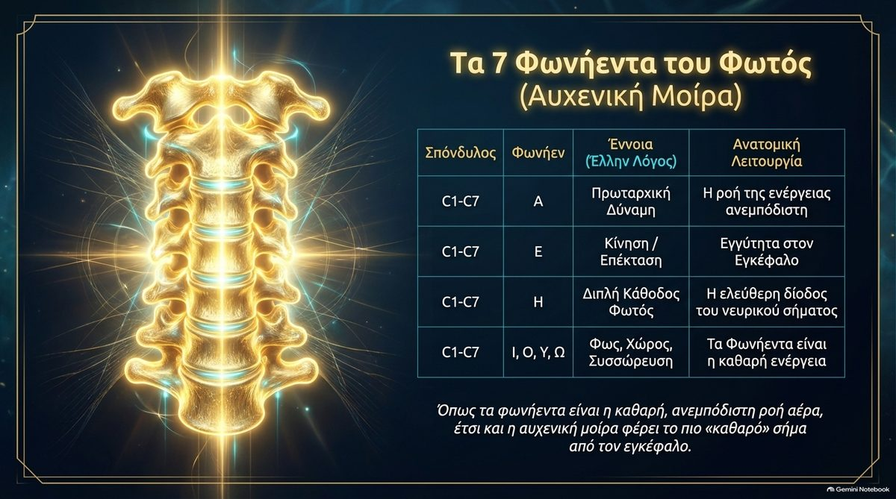
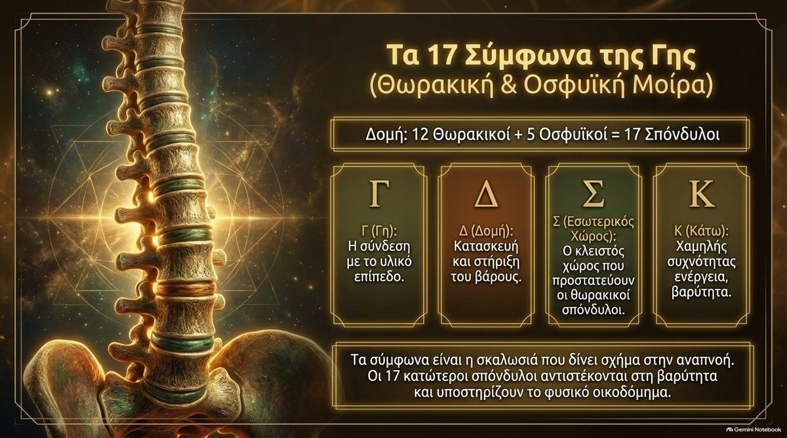
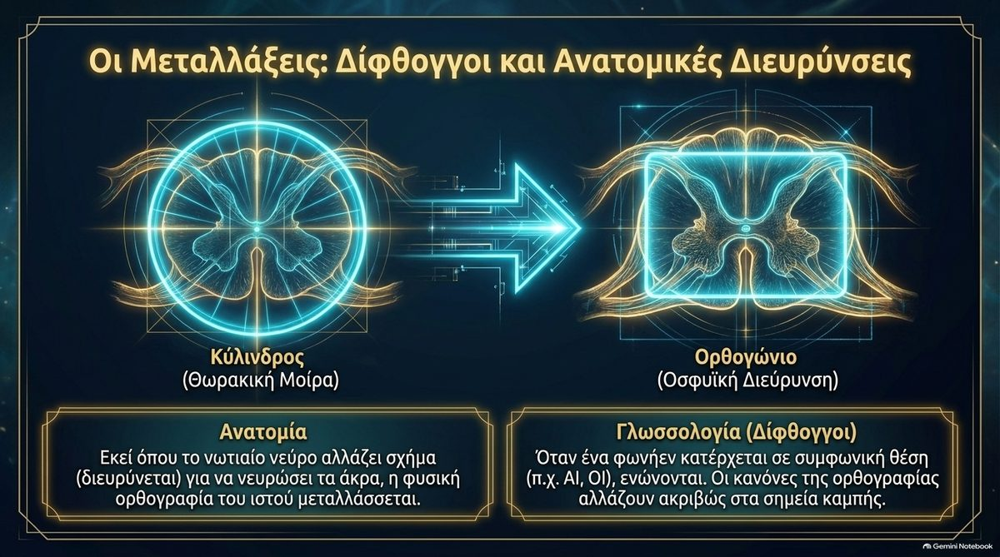
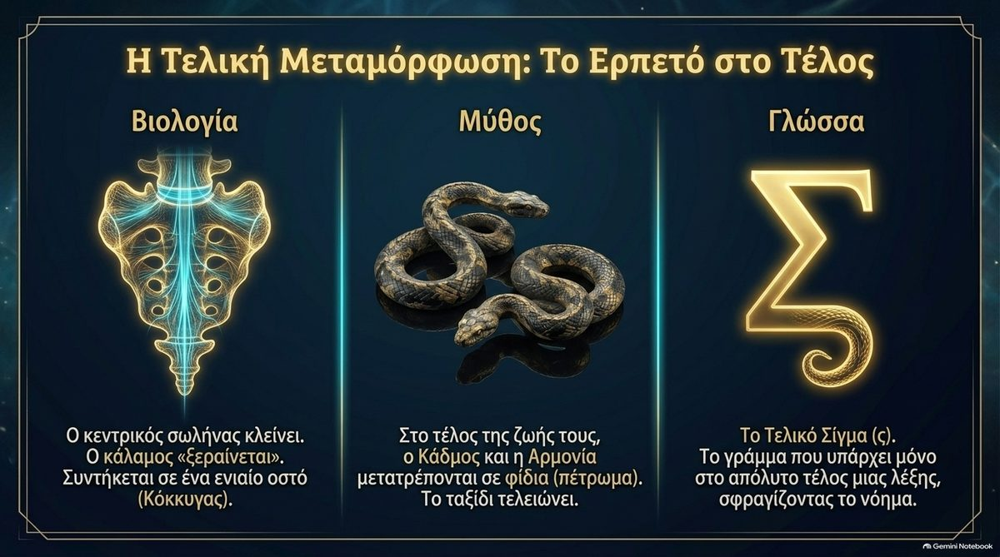
Το Οριζόντιο Συνημίτονο
Το τελευταίο κεφάλαιο του χειρογράφου περνά από τη σπονδυλική στήλη στο κύτταρο, και από τον κάθετο άξονα της κάθοδου σε έναν οριζόντιο άξονα διάσωσης.
Δύο άξονες. Ο κάθετος άξονας (Ημίτονο) είναι η καταγωγή: από γονέα σε θυγατέρα με κυτταρική διαίρεση. Ο οριζόντιος άξονας (Συνημίτονο, Κάλαμος) είναι πλευρικός: Οριζόντια Μεταφορά Μιτοχονδρίων (HMT), όπου υγιή κύτταρα περνούν μιτοχόνδρια, πακέτα ενέργειας, σε πεινασμένους γείτονες χωρίς διαίρεση.
Η πύλη. Μια πύλη συνοχής H(c, u), έλεγχος των γλυκοπρωτεϊνών της επιφάνειας, ανοίγει τη γέφυρα των νανοσωλήνων σήραγγας. Η εξίσωση είναι D(t) = O(t) + Σ [ H(c, u) · Slat ], με Slat = cos(θ) · Mmito.
Η γεωμετρία. Το Jitterbug του Buckminster Fuller, η συστολή και διαστολή ανάμεσα σε εικοσάεδρο και οκτάεδρο, δίνει χώρο για τη φωνητική αντήχηση και το νωτιαίο κύμα. 4995 ÷ 135 = 37 και 1 + 9 + 27 = 37 σφραγίζει το σύστημα.
Συμφωνεί. Τα κύτταρα μπορούν να περνούν μιτοχόνδρια μεταξύ τους μέσω νανοσωλήνων σήραγγας, και έχει δειχθεί σε μελέτες εργαστηρίου και ζώων ότι βλαστοκύτταρα και αστροκύτταρα δωρίζουν μιτοχόνδρια σε κατεστραμμένα κύτταρα. Η αριθμητική είναι σωστή: 4995 ÷ 135 = 37 και 1 + 9 + 27 = 37.
Διαφέρει. Η μεταφορά μιτοχονδρίων είναι ενεργό ερευνητικό πεδίο και οι περισσότερες ενδείξεις προέρχονται από καλλιέργειες και ζωικά μοντέλα, όχι από υγιείς ανθρώπους, άρα το «επιβεβαιωμένο» είναι ισχυρότερο από τις ενδείξεις. Η «πύλη γλυκοπρωτεΐνης με c = 1», το συνημίτονο του διανύσματος ενέργειας και η αντιστοίχιση στους άξονες Ημιτόνου και Συνημιτόνου είναι το δικό του μοντέλο του Κώδικα και όχι αποδεδειγμένη βιολογία.
Η Φράκταλ Ιστορία του Καλαμιού
Η περίληψη της πραγματείας: η ίδια ιστορία λέγεται σε κάθε κλίμακα, από τη μήτρα ως το τοπίο.
| Κλίμακα | Το καλάμι | Η ιστορία |
|---|---|---|
| Εμβρυολογία | Νευρικός σωλήνας | Σχηματίζεται το κούφιο. |
| Σπονδυλική στήλη | Κεντρικός σωλήνας και ΕΝΥ | Το καλάμι πάλλεται. |
| Αλφάβητο | Κάλαμος, το υγρό του Κάδμου | Το καλάμι κουβαλά τον κώδικα. |
| Θάλασσα | Yam Suph | Το καλάμι χωρίζεται και διασχίζεται. |
| Κόκκυγα | Συνενωμένο οστό | Το καλάμι γίνεται πέτρα. |
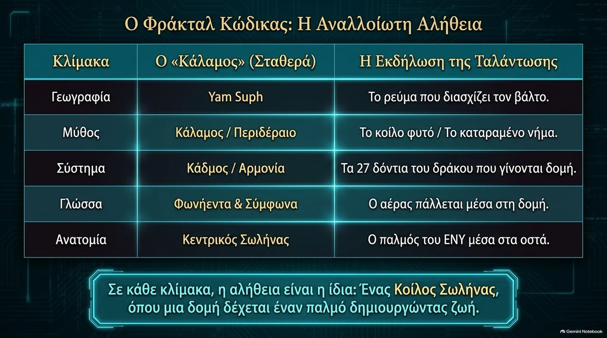
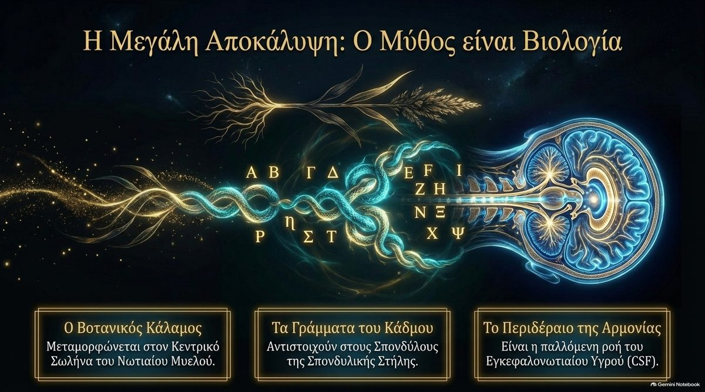
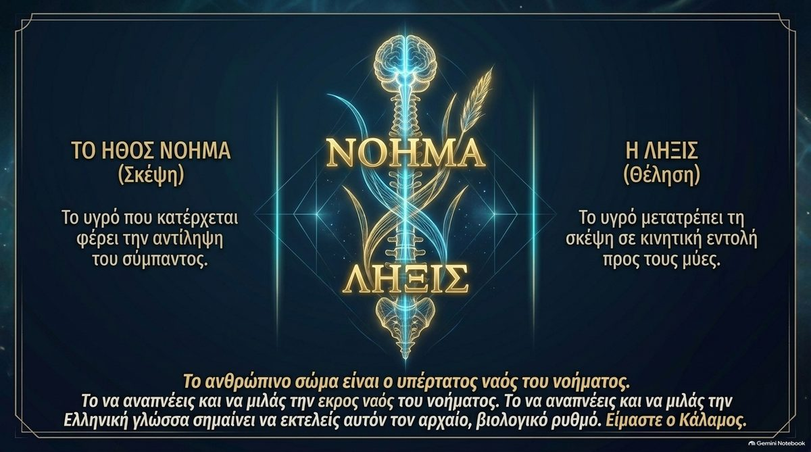
Τι Ελέγχθηκε
Έλεγχος τυχαιότητας. Πέρασα τη διαφορά Κάδμος προς Κάλαμος από ένα φίλτρο πολλών σταδίων σε μια ελληνική λίστα λέξεων: το σύγχρονο ελληνικό ορθογραφικό λεξικό, 812.096 μορφές λέξεων. (Ένα λεξικό της αρχαίας ελληνικής θα ήταν καλύτερος έλεγχος.) Στάδιο 1: όλα τα δυνατά ζεύγη λέξεων, περίπου 330 δισεκατομμύρια. Στάδιο 2: ζεύγη με διαφορά τιμών ακριβώς 27, περίπου 310 εκατομμύρια (0,09%), άρα ο αριθμός από μόνος του δεν αποδεικνύει τίποτα. Στάδιο 3: ζεύγη που διαφέρουν με τον ίδιο τον δομικό κανόνα, ένα Δ που ανοίγει σε ΛΑ, που ανάγει ολόκληρη τη γλώσσα σε 86 ζεύγη, από περίπου 17 οικογένειες λέξεων (τα περισσότερα είναι κλίσεις του ίδιου θέματος, όπως ΔΙΚΟ και ΛΑΙΚΟ ή ΙΔΡΟ και ΙΛΑΡΟ). Στάδιο 4: ζεύγη των οποίων οι δύο λέξεις συνδέονται και στο νόημα. Διαβάζοντας και τα 86, μόνο τα ΚΑΔΜΟΣ και ΚΑΛΑΜΟΣ συνδέουν τον αρχιτέκτονα των γραμμάτων με τον κούφιο κάλαμο, άρα το χωνί καταλήγει σε ένα. Δύο επιφυλάξεις: το στάδιο 4 είναι ανθρώπινη κρίση νοήματος, που έγινε αφού βρέθηκε το ζεύγος, και η λίστα λέξεων είναι νεοελληνική και όχι αρχαία.
Οι ετικέτες του ίδιου του χειρογράφου. Αποκαλεί το ΦΎ «Physis = 900» και το ΨΉ «Psephos = 708». Αυτές είναι οι τιμές των δύο γραμμάτων κάθε ζεύγους (Φ + Υ = 900, Ψ + Η = 708, σύνολο 1608). Οι ολόκληρες λέξεις βγάζουν ΦΥΣΙΣ 1310 και ΨΗΦΟΣ 1478.
Οι διαφάνειες είναι εικονογραφήσεις ιδεών που έγιναν στο Gemini Notebook, όχι δεδομένα. Μία δεν χρησιμοποιήθηκε, γιατί λέει «27 γράμματα = 27 δομικά στοιχεία», κάτι που δεν ελέγχεται, και τα γράμματα στην εικόνα της είναι παραμορφωμένα.
Το διάγραμμα «Kalamos – Soma 1729 Cosine Baseline» δεν εμφανίζεται εδώ, γιατί δίνει τα μέρη ως 390 και 977 ενώ οι λέξεις είναι 460 και 907 (κεφάλαιο IV).
Οι βιβλιογραφικές αναφορές του χειρογράφου, ελεγμένες όσο μπορούσα
Waal (2022), Journal of Hellenic Studies 142. Δεν μπόρεσα να επιβεβαιώσω αυτό το άρθρο. Το αρχικό και ο τίτλος μοιάζουν λάθος· το έργο που γνωρίζω για τα phoinikeia της Willemijn Waal είναι του 2018. Ελέγξτε το πριν το παραθέσετε.
Simaioforos, Ellin Logos. Ένα αρχείο λέει 1993 και άλλο 2018, και ο εκδότης δεν επιβεβαιώνεται.
Hoffmeier, Israel in Egypt. Πραγματικό και σχετικό βιβλίο, που εκδόθηκε πρώτα από το Oxford University Press το 1996.
Fuller, Synergetics (1975). Πραγματικό βιβλίο, Macmillan.
StatPearls NBK513247, NASS 2023, Frontiers in Neurology 2024 (GV-16) και Frontiers in Cell & Developmental Biology 2023. Δεν μπόρεσα να τα ελέγξω από εδώ. Οι αριθμοί άρθρου στις δύο καταχωρίσεις Frontiers μοιάζουν με παλαιότερα έτη. Ελέγξτε το καθένα.